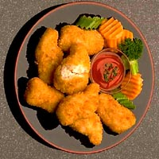
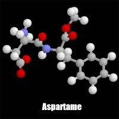

|

A trip to a fast food restaurant or a meal at home made from "convenience" foods is a great way to consume many types and amounts of food additives. Taken in moderation, food additives are typically non-toxic to the human body, However, some people find that they have "sensitivities" to foods that contain certain additives and others find that they must avoid certain foods altogether. Monosodium glutamate, aspartame, sulphites and nitrites are common additives which seem to pose the most problems in the population. Nitrates and nitrites These two ingredients are used extensively in cured meats like luncheon meats, ham and hot dogs. The compounds that form within our bodies after ingesting these additives are implicated in research studies as a cause of cancer in laboratory animals. Nitrates and nitrites are also used as flavor enhancers and colorants. The public became aware of their cancer-causing possibilities years ago. Nitrate itself has not been shown to produce a carcinogenic effect in animals, but it can be converted by bacteria in human saliva and in the intestine into nitrite, and nitrite can chemically react with certain other chemicals normally present in the body (amines and amides) to produce compounds called nitrosamines. Nitrosamine varieties number around 300 and roughly 90 percent of these have been found to be carcinogenic. The ability of these additives to reduce the chance of botulism poisoning keeps them in our food. While it may be true that you are at a lower risk ingesting foods containing these ingredients if you don't consume them on a daily basis, if you have sausage with your breakfast, eat a salami sandwich for lunch and ham for dinner, you are exposing yourself to high amounts of these known cancer-causing factors. Nitrates are also found in "natural" foods such as some vegetables. It is the amount of nitrosamines that are formed that is in question. So far, the amount of these substances seems to be insignificant (in scientific studies).
Glutamate (as Glutamic Acid,an amino acid, is one of the most abundant and important components of proteins. Glutamate occurs naturally in protein-containing foods such as cheese, milk, mushrooms, meat, fish, and many vegetables. Amino acids are the building blocks of proteins. Glutamate is also produced by the human body and is vital for metabolism and brain function. It is a neurotransmitter that allows cells in the brain to communicate with each other. MSG is the sodium salt of glutamate. When MSG is added to foods, it provides a similar flavoring function as the glutamate that occurs naturally in food. MSG is comprised of nothing more than water, sodium and glutamate. Commonly associated with Chinese take-out food, this flavor-enhancing amino acid in commercially-produced, refined form, can cause a myriad of problems because it is in free form; that is, not delivered along with other constituents that negate its adverse effects. MSG is known as an exitotoxin (along with cysteine and aspartate). Exitotoxins, when ingested in their chemically-purified form in abnormal quantities, can cause neurons in the brain to become overstimulate and die. MSG is often disguised on processed food labels as textured vegetable protein (TVP) or plant protein extract. The word hydrolyzed always refers to MSG. MSG is added to frozen foods because they would taste extremely bland if it wasn't. Frozen foods taste bland because freezing breaks down enzymes and co-enzymes that give fresh food its unique taste, and destroys some of its food value. MSG's popularity is due to its ability to render such compromised foods more palatable. In the early 1900s, MSG was extracted from natural protein-rich foods such as seaweed. Today, MSG is made from starch, corn sugar or molasses from sugar cane or sugar beets. MSG is produced by a natural fermentation process that has been used for centuries to make such common foods as beer, vinegar and yogurt. The human body treats glutamate that is added to foods in the form of MSG the same as the natural glutamate found in food. For instance, the body does not distinguish between free glutamate from tomatoes, cheese or mushrooms and the glutamate from MSG added to foods. Glutamate is glutamate, whether naturally present or from MSG. The average person consumes about 11 grams of glutamate per day from natural protein sources and less than 1 gram of glutamate per day from MSG. This amount of added MSG is the same as adding 1 to 1.5 ounces of parmesan cheese. In contrast, the human body creates about 50 grams of glutamate daily for use as a vital component of metabolism.
MSG is not an allergen, according to the American College of Allergy, Asthma and Immunology. The U.S. Food and Drug Administration has found no evidence to suggest any long-term, serious health consequences from consuming MSG. It is possible that some people might be sensitive to MSG, just as to many other foods and food ingredients. There are some reports that mild, temporary reactions to MSG may occur in a small portion of the population, based on tests with a large dose of MSG in the absence of food. Common adverse reactions to MSG include chest pain, drowsiness, burning sensations (back of the neck and chest), plus tingling and weakness in the upper back, arms and neck. MSG considered safe and is one of the most extensively researched substances in the food supply. Numerous international scientific evaluations have been undertaken over many years, involving hundreds of studies. The United States and other governments worldwide support the safety of MSG as used in foods.
MSG is often disguised on processed food labels as textured vegetable protein (TVP) or plant protein extract. The word hydrolyzed always refers to MSG. Glutamate-containing food ingredients, such as hydrolyzed protein and autolyzed yeast extract, must be listed on food labels. When glutamate is a component of natural protein foods, like tomatoes, it is not listed separately on the label.  Aspartame This additive, shown at the left in molecular form, is used in sugar substitutes such as Nutrasweet and Equal. Approved by the FDA in 1993 for inclusion in all foodstuffs with no restrictions [this means it can be added to foods that do not require labeling, such as fast food items], and an ingredient in sugar-free sodas, this chemical changes to formaldehyde, phenylalanine and methanol in the human body, or when a product containing it is heated to more than 30 degrees C. Formaldehyde is typically used to preserve dead bodies, and methanol is a deadly neurotoxin, commonly known as wood alcohol. Over 92 known side-effects are caused by ingestion of Aspartame (known to the Food and Drug Administration), including vomiting, anxiety attacks and tinnitus (ringing in the ears). Ingestion of Aspartame-containing foods has resulted in several deaths. It's even a component in most chewing gums. Symptoms may be delayed or immediate. Like MSG, its effects are both immediate (in particularly sensitive people) and delayed. Women have been advised to avoid the intake of products containing aspartame during pregnancy and nursing. Sulfites Used to preserve foods (especially dried fruits), sulfites also occur naturally as a result of fermentation in alcoholic beverages (wine & beer). Although sulfites have been used since Roman times as a preservative, many people have an allergic reaction with serious consequences when they ingest sulfites. They are particularly implicated in worsening asthma. Sulfiting agents are used to help prevent spoilage and discoloration and were banned by the Food and Drug Administration in 1984 for use on foods that are meant to be consumed raw, such as salad bar items (vegetables and fruits), but are still legally used in processed foods. They are still illegally used in some restaurant salad bars. They are also added to some commercial cookies, crackers and cereals.
| ||||||||||||||||||||||||||||||||||||
 Glutamate and Monosodium Glutamate (MSG)
Glutamate and Monosodium Glutamate (MSG)